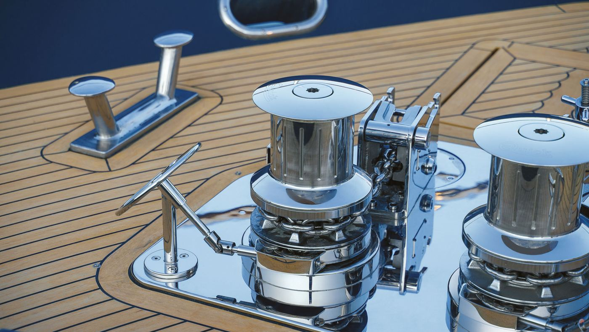

Ancoraggio
Salpa ancora ad asse verticale e orizzontale, on-deck e solo cima, verricelli da tonneggio e multiuso. Contacatena, pulsantiere e radiocomandi per comandarli da dove vuoi, e le ancore Olympic.
- Salpa ancora
- Verricelli
- Ancore Olympic
- Radiocomandi